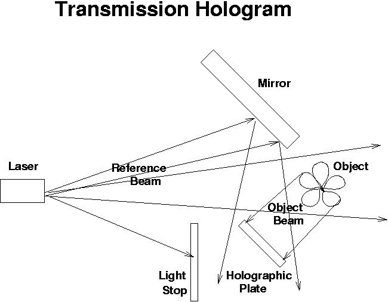
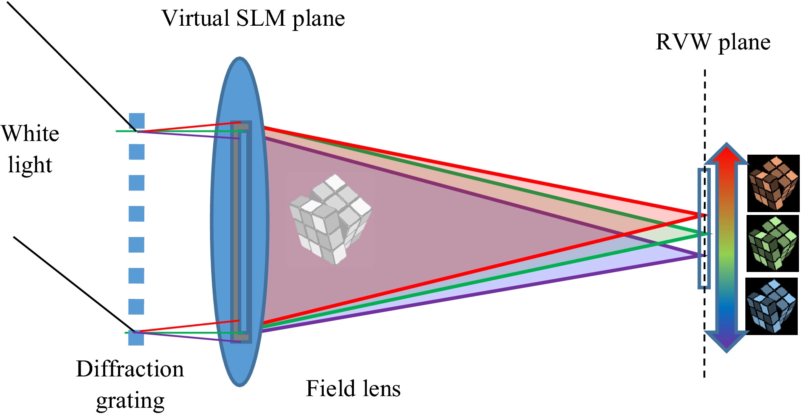

الهلوغرام تقنية تسمح بإنشاء صور ثلاثية الأبعاد باستخدام أشعة الليزر، بحيث تطفو الصورة في الهواء كمجسم هلامي فيه طيف مـن الألوان ليتجسد على الشكل المراد عرضه، وذلك باستخدام جهاز ليزر، ومقسم للأشعة، وعدسات ومرايا، إضافة إلى فيلم هولوغرافي. الهولوغرام وهذا المصطلح مأخوذ من الكلمات اليونانية هولوس (كامل) وغراما (رسالة). على عكس الواقع ثلاثي الأبعاد أو الواقع الافتراضي على شاشة كمبيوتر ثنائية الأبعاد ، فإن الهولوغرام هو بالفعل صورة ثلاثية الأبعاد وقائمة بذاتها لا تحاكي العمق المكاني أو تتطلب جهاز عرض خاصًا. من الناحية النظرية ، يمكن أن تنتقل الصور المجسمة في يوم من الأيام إلكترونيًا إلى جهاز عرض خاص في منزلك وعملك ابتكار هذه التقنية يعود إلى عام 1947 على يد عالم الفيزياء دينيس غابور؛ في محاولة منه لتحسين قوة تكبير الميكروسكوب الإلكتروني، بهدف إنشاء مجسم ثلاثي الأبعاد، وظهرت أول صورة هولوغرامية العام 1962 على يد العالمين إميت ليث وجوريس أوباتنيكس، من جامعة ميشيغان الأمريكية، اللذين صنعا مجسمات هولوغرامية لقطار لعبة وعدد من الطيور. وتوالت بعد ذلك التطبيقات، حتى ظهر أول هولوغرام لصورة إنسان العام 1967. وفي العام 1971، حصل غابور على جائزة نوبل في الفيزياء عن العمل الذي قام به في أربعينات القرن الماضي كي تصنع هولوغرامًا، تحتاج إلى شيء أو (شخص) تود تسجيله؛ وشعاع ضوء يُسلط على الشيء (الهدف) ووسط التسجيل مع المواد المناسبة اللازمة للمساعدة في توضيح الصورة؛ ووسط شفاف كي يُمكّن أشعة الضوء من أن تتقاطع. يُصنع الهولوغرام أو الصور المجسمة باستخدام الليزر. السبب في أنهم يستخدمون الليزر بدلاً من الضوء (الأبيض) العادي هو أن ضوء الليزر "متماسك". ما يعنيه ذلك هو أن جميع موجات الضوء في شعاع الليزر لها نفس الحجم وتهتز في نفس الوقت تمامًا. نظرًا لأن جميع الموجات لها نفس الحجم ، فإن كل الموجات ستنحني بنفس الطريقة. (إذا سبق لك أن سلطت ضوءًا أبيض من خلال منشور ، فأنت تعلم أن الألوان المختلفة للضوء ستنحني بشكل مختلف - وذلك لأن كل الألوان المختلفة لها موجات بأحجام مختلفة. إذا قمت بتسليط ليزر من خلال منشور ، فإن الكل ينثني الشعاع معًا ، لأن جميع موجاته لها نفس الحجم.) تصنع الصور المجسمة أو الهولوغرام باستخدام شعاع ليزر واحد. ثم يتم تقسيم الشعاع إلى شعاعين بواسطة عدسة خاصة. بهذه الطريقة ، تحصل على شعاعي ليزر متطابقين تمامًا. أحد هذه الحزم هو "الشعاع المرجعي" الذي يتم تسليطه مباشرة على الفيلم. (الفيلم هو في الأساس نفس الأشياء مثل فيلم الصور العادي.) ينعكس الشعاع الثاني على الكائن الذي تريد عمل صورة ثلاثية الأبعاد له. عندما يتقاطع شعاعي الليزر ، فإنهما يخلقان ما يسمى بنمط التداخل. هذا هو النمط الذي تصنعه مجموعتا الموجات عندما تتداخلان. (لتصوير هذا ، يمكنك أن تتخيل أنك أسقطت حصاتين في بركة مياه. تصنع الحصى موجات تتجه إلى الخارج ، وعندما تصطدم مجموعتا الموجتان ببعضهما البعض ، فإنها تشكل نمطًا.) هذا النمط هو ما تم تسجيله على فيلم. ثم عندما يتم تطوير الفيلم ، يمكنك رؤية الصورة كاملة. الشيء المثير للاهتمام حول الهولوغرام أو الصور المجسمة هو أنه عندما يتم تسجيل الصورة على الفيلم ، يتم تسجيل الصورة بأكملها على قطعة الفيلم بأكملها ، لذلك إذا قمت بقص الفيلم إلى نصفين ، فلا يزال بإمكانك رؤية الصورة بأكملها. يبدو الأمر كما لو كنت تنظر من نافذتك. إذا نظرت من خلال نصف النافذة فقط ، فلا يزال بإمكانك رؤية الصورة بأكملها في الخارج. تمثل الصورة العاكسة ثلاثية الأبعاد تسجيلًا للمعلومات المتعلقة بالضوء الذي جاء من المشهد الأصلي كما هو مبعثر في مجموعة من الاتجاهات وليس من اتجاه واحد فقط ، كما في الصورة. يسمح ذلك بمشاهدة المشهد من مجموعة من الزوايا المختلفة ، كما لو كان لا يزال موجودًا.
 